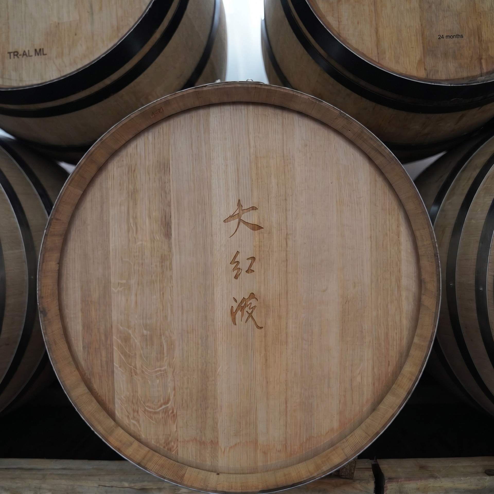

我们的故事
纯净，热烈
大红泼酒庄创立于2020年，坐落在云南香格里拉梅里雪山产区，海拔3400米。横断山脉深处，三江并流之地。冰川融水灌溉，高原阳光照耀。
我们相信好酒是种出来的——70%在葡萄园，30%在酿造间。每一瓶大红泼，都是这片极限之地最诚实的表达。
这里的葡萄藤长在海拔2200到3068米的山坡上。强紫外线、平均20度昼夜温差、比世界上很多产区多出30到60天的生长期——果实小、皮厚、风味高度浓缩。好的酿造，从好的原料开始——时间够长、阳光够烈、夜晚够凉。
最终的酒应该是什么样？平衡的，优雅的，纯净的，热烈的。像这座山本身。
